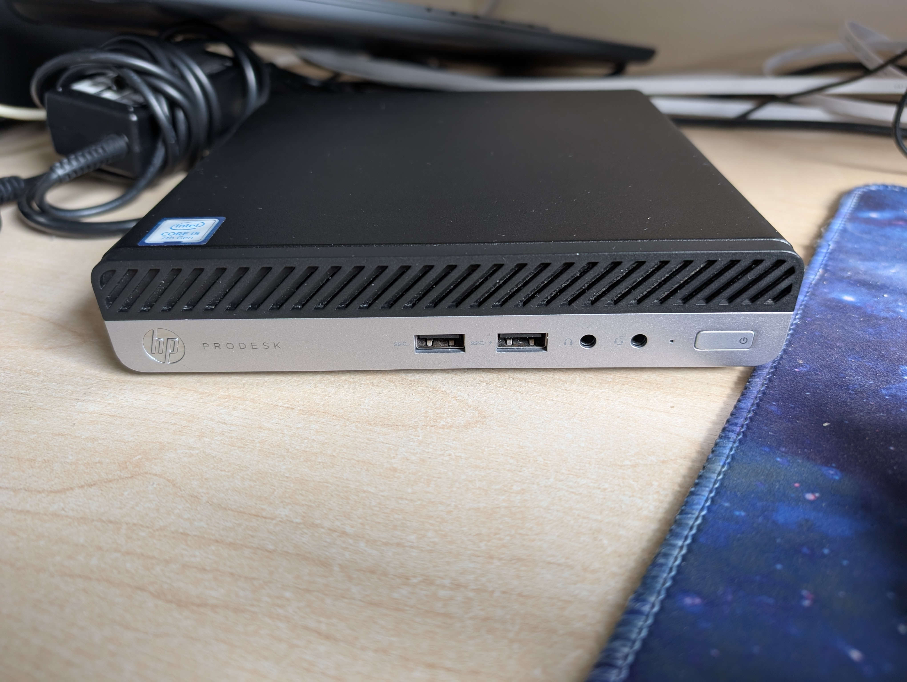

The PC

This HP ProDesk 400 G3 mini PC was found on ebay for £80. Sadly this didnt include RAM or storage, but 16GB of DDR4 and a 240GB SATA SSD was picked up at CEX (as well as a wifi module on ebay) for around £35.
Specs
- CPU: Intel i5-7500T
- RAM: 16GB DDR4 2400mhz
- Storage: 240gb SATA SSD
- OS: Linux Mint LMDE6
Why choose this over an Amazon Firestick/Smart TV apps?
The Amazon Fire TV devices have been known to record enormous amounts of data about you (Mozilla Foundation, 2022). They collect information to target advertising. This includes: Shopping habits, TV shows and films watched, when you control smart devices (e.g. locks), name, phone number, age, address, gender, the list goes on. This is therefore not good for privacy at all.
Similarly, Smart TVs have been known to sell your data to third parties by default. LG, one of the most popular TV brands, has a setting which (by default) sells data collected by its G3 OLED TV to third parties (Consumer Action Taskforce wiki, 2025). You have to manually opt out of this, and therefore this is also a privacy nightmare. Cyber security experts have recommended that smart TVs are not connected to the internet for privacy reasons such as this.
Using a linux-equipped mini PC instead allows for greater control and better privacy. It allows for easier implementation of ad-blocking, cookie deleting and privacy enabling software, improving the content consumption experience without being tied to subscriptions for everything or telemetry. The much larger amount of internal storage a mini PC can offer means there is more versatility too. You can easily add one or two 1TB/2TB SSDs to these and play local music/videos. You can also use these machines as a media server thanks to services such as Plex or Jellyfin.
Why I chose to use Linux Mint LMDE6 over Windows
I chose Linux Mint for this PC as I believe it is the best linux distribution for daily use. Mint has great ease of use, and great software compatbility which makes it perfect for this application.
Mint is also not bloated like Windows is, so it is a more lightweight and snappier OS. It also does not contain telemetry features like Windows does, making it a more privacy-respecting option than Windows. As well as this, Windows 11 only supports 8th Gen intel CPUs or newer, and this mini PC being a 7th gen, it is not officially supported despite being capable of running it. This move by Microsoft is purely to drive sales of new machines (in my opinion), which will confine many usable machines to landfill, when Windows 10 is dropped from support in October 2025.
My solution for a TV remote
A challenge when doing this was to find a way of using the PC like how you would use a remote on a firestick or smart TV. The simplest solution was to use the Logitech K400 wireless keyboard. This has a built in touch pad, and connects seamlessly thanks to Solaar. Whilst abit more cumbersome than a remote, it works fairly well. These keyboards can be found on ebay for around £25.
What I used to get ad-free streaming
I primarily used Brave Web Browser. This is a privacy-respecting browser based on chromium which allows extensions to be added to block ads. Below I have listed all the extensions used, all of these are avaliable in Brave's web store:
- Ublock Origin: This is my adblocker of choice. It just works. It makes streaming content far more enjoyable.
- Privacy Badger: This blocks trackers on sites.
- I still don't care about cookies: This is a tool that blocks/deletes cookies and the annoying pop-ups when you visit sites these days.
- Cookie Auto Delete: This does what it says on the tin really, deletes cookies after you close a tab down.
- DuckDuckGo Privacy Essentials: A group of privacy tools by DuckDuckGo.
Setting the device up for streaming
Once the browser extensions were in place, it was simply a case of adding the streaming sites to the bookmarks on brave for easy access. I also added shortcuts to the mint desktop so streaming sites can be accessed by one click, just like on a firestick.
To improve privacy further, for free with ads-type streaming platforms, I created accounts with disposable email addresses (tempmail.org works well for this) and strong passwords (100+ bit entropy). This is so that the companies cannot spam my real inbox with promotional junk, and that my real email address isnt exposed should they suffer a data breach. I also added fake addresses (but still within the correct county so regional programs can still be viewed) for the same reason.
Once this was done, it was simply a case of plugging the mini PC in under the TV (inc. an aux cable plugged into the PCs headphone jack for sound) and it is good to go!
This makes a great device for local files too!
Thanks to the relatively modern i5 in this machine, it is capable of playing high quality bitrate, high resolutuion films and TV locally. I personally use Kodi in this instance, as it gives a more TV-friendly user interface. Handy if you sit far away from the TV. As this device supports both a SATA and NVME drive, there is lots of internal storage that can added to this machine (literal Terabytes!)
Conclusion
Whilst this solution is more expensive than a firestick would be, coming to £140 all in, I believe it is a much better and privacy-respecting way of viewing content on your TV. I would highly recommend picking a machine like this up and doing the same.
References
https://foundation.mozilla.org/en/privacynotincluded/amazon-fire-tv/
https://wiki.rossmanngroup.com/wiki/LG_Television_sale_of_personal_data
Special thanks to Alex for introducing me to the browser extensions used in this! https://www.cyberalex.uk/extensions.html